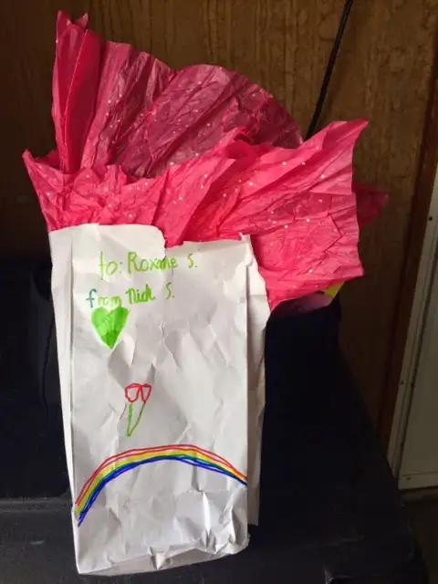
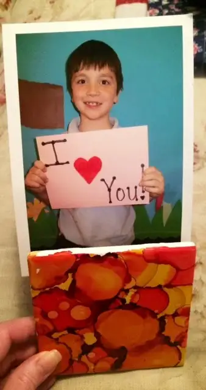
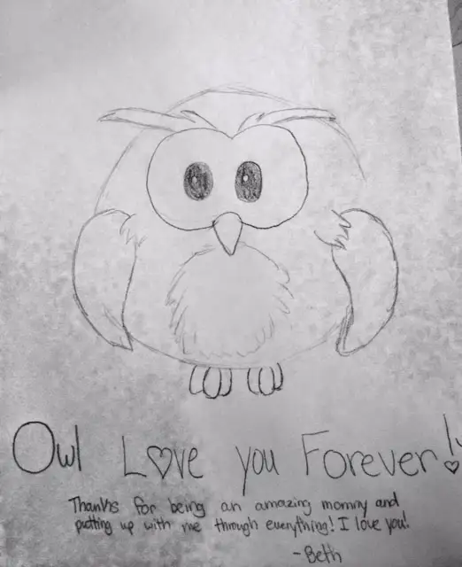
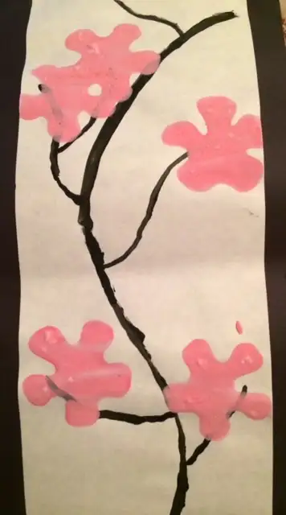
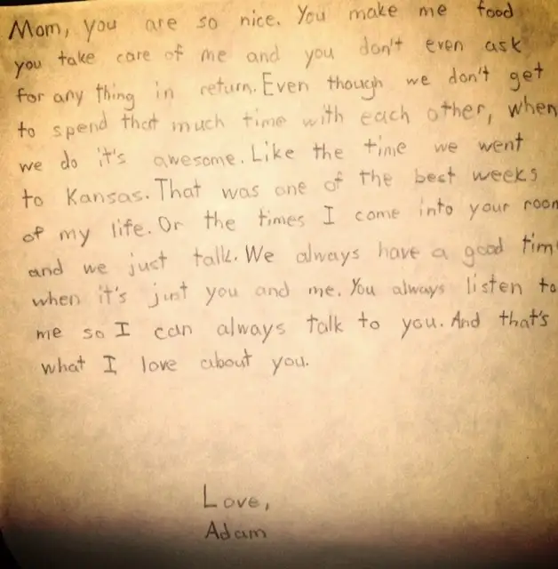

This weekend, I came upon a Mother’s Day post I did a few years back — a Mother’s Day reflection in pictures. It brought happiness to my heart, and seemed such a simple but poignant way of sharing how my family brought joy to me that year. So I thought, along with linking to that precious post, I’d do the same for this year (below).
Just one more verbal mention: I was treated to breakfast in bed by my middle son this morning. It used to be his sisters who took on this task, and as girls are wont to do, it came with all the frills. His he-version of breakfast in bed was a little tamed down — coffee and cocoa puffs — but his sweet smile and generous spirit reached straight through to my heart. I enjoyed every chocolate ball and the coffee was just perfect with the right amount of half and half!
Later, our whole family enjoyed a Mother’s Day brunch. Last night at a Mass for which I served as cantor, we had our May crowning featuring the mother of all mothers, Mary! Isn’t she gorgeous?
{kind=link}
The rest of my Mom’s Day weekend treasures will be shared in the visuals below. One of my disappointments was not having the chance to get a mom and kids photo this year.
God bless all you mothers and the teachers who help make the day special with their organizing of projects that bring us so much joy!
 |
||||
| Gift #1: What could it be??? |
{kind=link}
 |
| Is this neat or what? An artistic tile with clips to hold photos! |
{kind=link}
 |
| Gift #2 from middle child: so sweet! |
{kind=link}
 |
| Gift #3 came with a surprise in the back… |
{kind=link}
 |
| Precious words that left me feeling immeasurably blessed… |
{kind=link}
{kind=link}